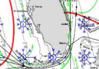
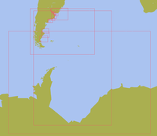
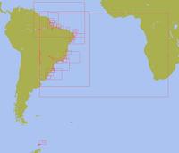
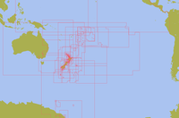
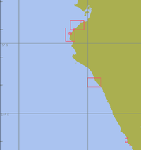
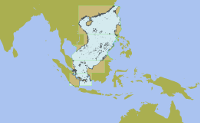

Welcome to Nautical Charts Catalogs.
This page contains the XML formatted of freely available nautical charts
General Purpose Charts
World GSHHG basemap polygons
{kind=link}
World basemap polygons, primarily for use in OpenCPN.
XML Catalog
World Pilot Charts
{kind=link}
Raster Charts
XML Catalog
Raster Nautical Charts
Argentina - RNC Charts
{kind=link}
Raster nautical charts of Argentina
XML Catalog
Brasil - RNC Charts
{kind=link}
Raster nautical charts of Brasil
XML Catalog
New Zealand - RNC Charts
{kind=link}
Raster nautical charts of New Zealand and Pacific Ocean
XML Catalog
Peru - RNC Charts
{kind=link}
Raster nautical charts of parts of the Peruvian coast
XML Catalog
South China Sea - ENC Charts
{kind=link}
Vector nautical charts of the South China Sea
XML Catalog
European Inland Waterways ENC Charts
Austria - IENC Charts
Inland ENC charts of Austria
XML Catalog
Belgium - IENC Charts
Inland ENC charts of Belgium
XML Catalog
Bulgaria - IENC Charts
Inland ENC charts of Bulgaria
XML Catalog
Croatia - IENC Charts
Inland ENC charts of Croatia
XML Catalog
Czech Republic - IENC Charts
Inland ENC charts of Czech Republic
XML Catalog
France - IENC Charts
Inland ENC charts of France
XML Catalog
Germany - IENC Charts
Inland ENC charts of Germany
XML Catalog
Hungary - IENC Charts
Inland ENC charts of Hungary
XML Catalog
Netherland - IENC Charts
Inland ENC charts of Netherland
XML Catalog
Poland - IENC Charts
Inland ENC charts of Poland
XML Catalog
Romania - IENC Charts
Inland ENC charts of Romania
XML Catalog
Serbia - IENC Charts
Inland ENC charts of Serbia
XML Catalog
Switzerland - IENC Charts
Inland ENC charts of Switzerland
XML Catalog